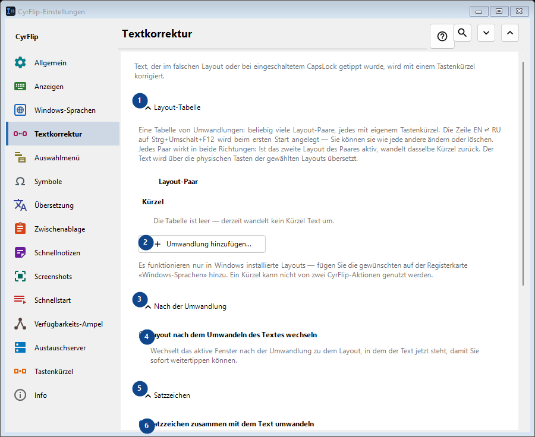
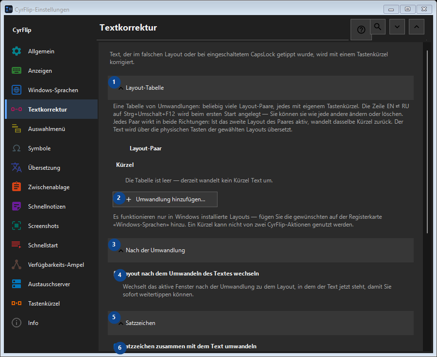

Textkorrektur
Zweck
Text, der im falschen Layout oder bei eingeschaltetem CapsLock getippt wurde, wird mit einem Tastenkürzel korrigiert.


Reihenfolge
Einstellungen gelten sofort. Eine feste Reihenfolge ist nicht nötig; nutzen Sie die Gruppen unten.
Elemente
1. Layout-Tabelle
Nutzen Sie diesen Befehl für die genannte Aktion. Lesen Sie eine Bestätigung, bevor Sie zustimmen.
Ihre Tastenkürzel2. Umwandlung hinzufügen...
Nutzen Sie diesen Befehl für die genannte Aktion. Lesen Sie eine Bestätigung, bevor Sie zustimmen.
Ihre Tastenkürzel3. Nach der Umwandlung
Nutzen Sie diesen Befehl für die genannte Aktion. Lesen Sie eine Bestätigung, bevor Sie zustimmen.
Ihre Tastenkürzel4. Layout nach dem Umwandeln des Textes wechseln
Wechselt das aktive Fenster nach der Umwandlung zu dem Layout, in dem der Text jetzt steht, damit Sie sofort weitertippen können.
Ihre Tastenkürzel5. Satzzeichen
Nutzen Sie diesen Befehl für die genannte Aktion. Lesen Sie eine Bestätigung, bevor Sie zustimmen.
Ihre Tastenkürzel6. Satzzeichen zusammen mit dem Text umwandeln
Eine Taste, die in beiden Layouts ein Zeichen statt eines Buchstabens liefert, sagt nichts darüber aus, in welchem Layout sie gedrückt wurde: hinter «/» liegt auf der russischen Taste ein Punkt, und das «/» des Ziffernblocks ist überall dasselbe und im kopierten Text nicht vom gewöhnlichen zu unterscheiden. Solange dies angehakt ist, werden solche Zeichen mit dem Text umgewandelt - so hat sich CyrFlip immer verhalten. Nehmen Sie den Haken weg, wenn Sie sie öfter absichtlich tippen: «/ghbdtn» behält dann seinen Schrägstrich, statt mit einem Punkt zu beginnen. Zeichen, auf deren Taste im anderen Layout ein Buchstabe liegt (Komma, Klammern), werden in jedem Fall umgewandelt.
Ihre Tastenkürzel7. Groß- und Kleinschreibung
Nutzen Sie diesen Befehl für die genannte Aktion. Lesen Sie eine Bestätigung, bevor Sie zustimmen.
Ihre Tastenkürzel8. CapsLock korrigieren
Vertauscht Groß- und Kleinschreibung in der Auswahl; hilfreich nach versehentlich aktiviertem CapsLock.
Ihre Tastenkürzel9. Ändern - CapsLock korrigieren
Nutzen Sie diesen Befehl für die genannte Aktion. Lesen Sie eine Bestätigung, bevor Sie zustimmen.
Ihre Tastenkürzel10. CapsLock nach der Groß-/Kleinschreibkorrektur angleichen
Ändert nach der Korrektur den physischen CapsLock-Zustand, damit weitere Tastenanschläge zum korrigierten Text passen.
Ihre Tastenkürzel